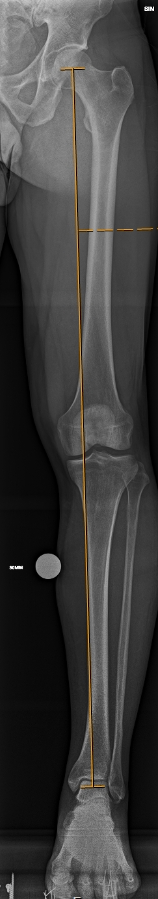
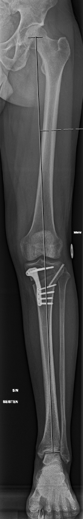
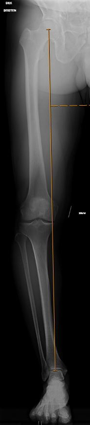
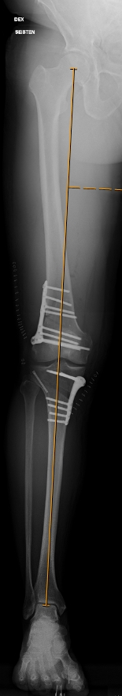

Simo Nortunen
Simo Nortunen
Osteotomian suomenkielinen käännös ”luun katkaisu ja kääntö” on useimmiten hieman liioitteleva, sillä yleisimmin luuta ei katkaista kokonaan vaan ehjää luuta jätetään saranaksi ja luun asentoa käännetään tämä sarana säilyttäen. Luun katkaisu kokonaan vaaditaan, kun luun rotaatiota joudutaan korjaamaan eli tehdään ns. derotaatio-osteotomia.
Sääriluun yläosan osteotomia (high tibial osteotomy, HTO) on klassinen toimenpide ja oli suhteellisen yleinen toimenpide 1960-luvulta alkaen polven sisäsyrjän nivelrikon hoitomuotona ennen tekonivelleikkausten aikakautta. Tekonivelleikkausten yleistyttyä tämä toimenpide jäi hieman unohduksiin mutta se on edelleen hyvä vaihtoehto liikunnalliselle potilaalle, joka haluaa säilyttää aktiivisen elämäntapansa ilman tekonivelen aiheuttamia rajoitteita. Parhaimmillaan HTO-toimenpide palauttaa liikuntakyvyn pitkäksikin aikaa eikä ole este myöhemmin tehtävälle tekonivelleikkauksella nivelrikon edetessä.
Reisiluun alaosan osteomian (distal femoral osteotomy, DFO) historiallinen leikkausaihe on pihtipolvisuuden (valgusvirheasento) korjaus erityisesti polven ulkosyrjän nivelrikosta kärsivillä. Joskus sekä DFO että HTO tehdään samalla kertaa, jos esimerkiksi alaraajan linjaus on hyvin poikkeava ja vain yhtä luuta kääntämällä aiheutettaisiin uusi anatominen poikkeavuus (eli deformiteetti).
Lonkan ja polven rasitusvaivoissa koko alaraajan luisella anatomia on keskeisessä roolissa. Sanonnalla ”luu voittaa aina” tarkoitetaan sitä, että pehmytkudokset kuten lonkan rustorengas, polven nivelkierukat ja -siteet ja myös lopulta nivelrusto vaurioituvat lopulta, mikäli luinen anatomia ohjaa mekaanisen kuormituksen epätoivotulla tavalla. Tämän vuoksi paraskaan mahdollinen kuntoutus ei aina riitä vaan kuormitusta joudutaan vähentämään esimerkiksi liikuntatottumuksia muuttamalla kevyemmiksi. Parhaassa tapauksessa osteotomialla voidaan liikuntakyky palauttaa jopa ennalleen mutta jo tapahtuneita pehmytkudosvaurioita osteotomialeikkaus ei tietystikään korjaa mutta saattaa hidastaa tai jopa pysäyttää niiden etenemisen.
Minulla on pitkä kokemus alaraajan osteotomiakirurgiasta ja tutkin jokaisen vastaanotolleni tulevan polvi- ja/tai lonkkavaivaisen potilaan linjauksen poikkeuksetta. Suurimmalle osalle potilaista ei toki ole tarpeen puuttua luiseen anatomiaan leikkaamalla mutta myös tapaturmaisissa polvi- ja lonkkavammoissa on syytä huomioida koko alaraajan linjaus, sillä näillä voi olla merkittävä vaikutus paitsi vamman syntyyn mutta myös siitä kuntoutumiseen hoitomuodosta huolimatta. Esimerkiksi eturistisiteen repeämistä suurin osa tapahtuu ilman ulkoista vammaa ja polven vääntyminen poikkeavaan asentoon vammahetkellä on ymmärrettävästi todennäköisempää niillä, joilla luinen anatomia ohjaa kuormituksen poikkeavasti. Mahdolliset linjauspoikkeamat onkin syytä kartoittaa viimeistään siinä vaiheessa, jos jo kertaalleen korjattu eturistiside repeää uudelleen tai polvi muuttuu hiljalleen epävakaaksi jopa ilman uutta vammaa. Linjauspoikkeama voi altistaa myös nivelkierukan vaurioitumiselle varsinkin ilman selvää vammaa ja tavallista nuorempana.
Esimerkkitapaus: Osteotomian käyttö polvivamman jälkeen
Vääntövamman seurauksena potilaan polvesta oli revennyt eturistiside jo aiemmin. Polvi oli jäänyt epävakaaksi ja tämän vuoksi eturistiside oli rakennettu uudelleen. Polvi toipui mutta pienessä vamman jälkeen tai sitten vain ajan kuluessa epävakausoire palasi. Kliinisessä tutkimuksessa polvi oli jälleen löysä ja magneettikuvauksessa todettiin eturistisidesiirteen olevan poikki. Röntgen-kuvissa nähdään, että alaraajan kuormitusakseli kulkee hieman sisäreunavoittoisesti ja säären sivukuvassa sääriluun nivelpinta on korostuneesti kallistunut taaksepäin.
Nämä luisen linjauksen ominaisuudet lisäävät merkittävästi eturistisidevamman riskiä mutta myös eturistisiteen uusintarepeämän riskiä. Tämän vuoksi tällä potilaalla päädyttiin korjaamaan luinen linjaus samalla, kun jälleen rakennettiin myös uusi eturistiside. Osteotomia tehtiin säären yläosaan ja linjausta korjattiin kahdessa suunnassa. Erityisesti useamman suunnan korjauksissa apuna voidaan käyttää potilaskohtaista sahausohjainta, joka suunnitellaan ja 3D-printataan yksilöllisesti mittojen mukaan.
Leikkauksen jälkeinen kuntoutus sujui hyvin ja polvi on edelleen vakaa ja oireeton useampi vuosi toimenpiteen jälkeen.


Esimerkkitapaus
Klassinen syy osteotomialle on polvinivelen sisäreunan nivelrikko, jossa kuluman vaikeusaste on vielä maltillinen ja/tai potilas on nuorehko, jolloin tekonivelleikkaus ei aina ole järkevin vaihtoehto. Osteotomialla pyritään keventämään kuluneen nivelalueen kuormitusta ja siten helpottamaan polvioiretta. Parhaimmillaan leikkauksen jälkeen jopa paluu kaikkeen liikuntaan voi onnistua kuntoutuksen myötä. Tavallisimmin osteotomia voidaan tehdä vain säären yläosaan, josta luuta kääntämällä saadaan kuormitusakseli korjattua tavoitteeseen. Virheasennon ollessa poikkeuksellisen runsas tai jos luinen anatomia näin vaatii saattaa joskus olla tarpeen tehdä ns. tuplaosteotomia, jossa linjausta korjataan sekä säären että reiden puolelta. Toipumisaika ei kuitenkaan merkittävästi eroa pelkään sääriluun kääntöön verrattuna. Alla on kahden eri potilaan kuvat ennen ja jälkeen leikkauksen. Molemmilla potilailla sisäreunan rustokuluma oli vielä hyvin lievä mutta sisäpuolen nivelkierukka oli katkennut kokonaan. Tällaisessa tapauksessa pelkkä nivelkierukan korjaus ei ole kestävä vaihtoehto vaan sisäreunan ylikuormitus tulee korjata.



